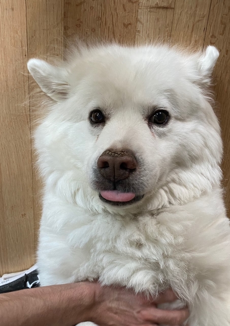

Athena is a biological cloud

Athena is a wiggly cloud.
Athena's favorite things
Hanging out
Athena's average day in quarantine includes:
Napping in front of the front door or at the top of the stairs
Walking around the neighborhood at 10 and 4
Receiving lots of attention from the neighborhood
Getting pets
Her favorite ways of being pet are:
Belly rubs
Ear scratches
Dewclaw flopping
Eating food
Athena loves food when it is outside of her food bowl, especially:
Haaaaaaaam!!!
Treats
Anything you drop on the floor